A Decade of Learning-Based Control: From Theoretic Foundations to Practical Deployment
A tutorial paper marking ten years of the Learning-Based Control invited sessions at the IEEE Conference on Decision and Control (CDC). It covers methods that mix machine learning with control theory, so a controller can learn from data and still come with stability or safety guarantees.
It sorts the methods into three families: (1) learn a model of the system, then design a controller for it; (2) skip the model and build the controller straight from recorded data; (3) learn or tune the controller itself (reinforcement learning, imitation learning, Bayesian optimization).
For each family it asks the same questions: what is learned, what must be known beforehand, how the error is measured, and which guarantee survives. Small worked examples (a car on bumpy terrain, a cart-pole) show each idea.
Paper Scope (Fig. 1) & Evolution of the Field (Figs. 2, 3, 4, 13)
Click any block in Fig. 1 to inspect its mathematical role and jump to its figures
Bridging Machine Learning Flexibility with Control-Theoretic Guarantees
Color-coded exactly as in the paper: Green = Stability & Safety Foundations (Section III); Orange = Methodological Paradigms from structured model-based learning to data-driven policy optimization (Sections IV–VI); Grey = Representative Application Domains (Section VII).
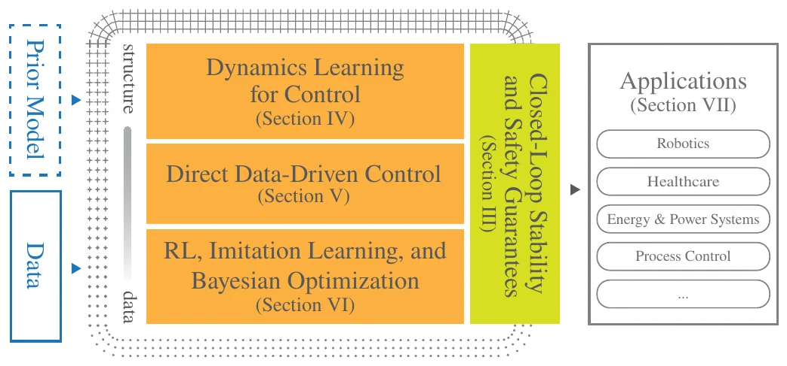
Clickable version: the same map rebuilt as buttons. Click a block for a one-line explanation.
Which Keywords Show Up in the 182 Session Papers
Each cell counts the papers of that year whose title or abstract uses the phrase. Darker = more papers.
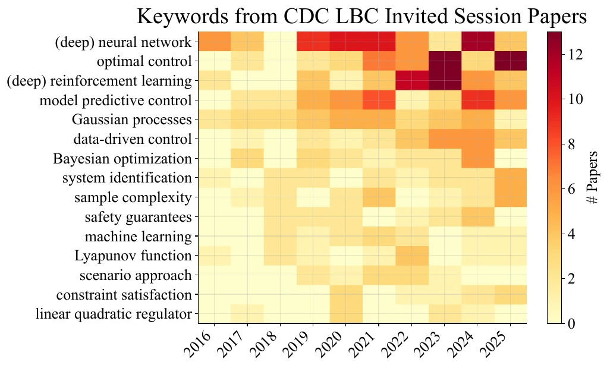
% of Papers with "Learning" in Title (CDC, ACC, ECC)
Percentage of papers containing "learning" in their title across major control conferences (CDC, ACC, ECC) from 2010 to 2025 (DBLP data, May 2026).
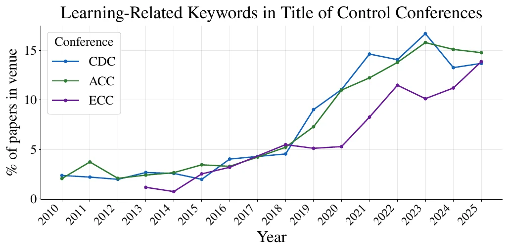
Core Equations of the Paper — Color-Coded by Role
uk = πk(xk, rk) s.t. g(xk, uk) ≤ 0
ISS: ΔV(xk) ≤ −α3(‖xk − x̄‖) + σ(‖wk‖)
Stochastic: 𝔼[V(xk+1) | xk] − V(xk) ≤ −ℓ(xk) + c
CBF Condition: b(f(xk, uk)) − b(xk) ≥ −α(b(xk))
Filter: minuk ‖uk − ukL‖² s.t. xk+1 ∈ 𝒮 (or xT|k ∈ 𝒮f)
GP: f̂l(z) ∼ 𝒢𝒫(μ̂(z), Σ̂(z)), Tightening: ±β · σ̂(z)
minα, u, y, σy ∑ ℓ(uk, yk) + λα‖α‖22 + λσ‖σy‖22
BO: θn+1 = arg maxθ∈Θ αEI(θ | 𝒟n), J(θ) ∼ 𝒢𝒫(μJ, σJ2)
Fig. 5: Visual Guide to Stability & Safety Notions
The paper's picture of each notion, then a sketch with a slider for the disturbance size
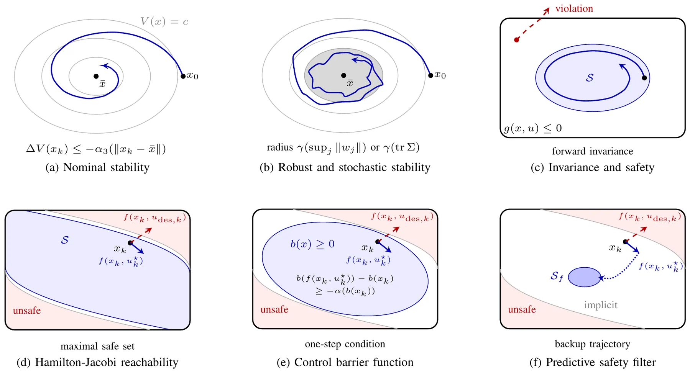
Sketch, not from the paper: the same ideas redrawn. Move the slider to grow the region in panel (b).
Fig. 6 & Fig. 7: Prior Structure in GP Learning & Safe GP-MPC under Uncertainty
How the assumptions built into a model decide what it learns (Fig. 6), and how its uncertainty is used inside MPC (Fig. 7)
What a Model Does Where There Is No Data
A car drives over terrain with true height h(p) = 0.01 cos(18p). Height is measured with noise everywhere except the grey gap. Four models must fill the gap.
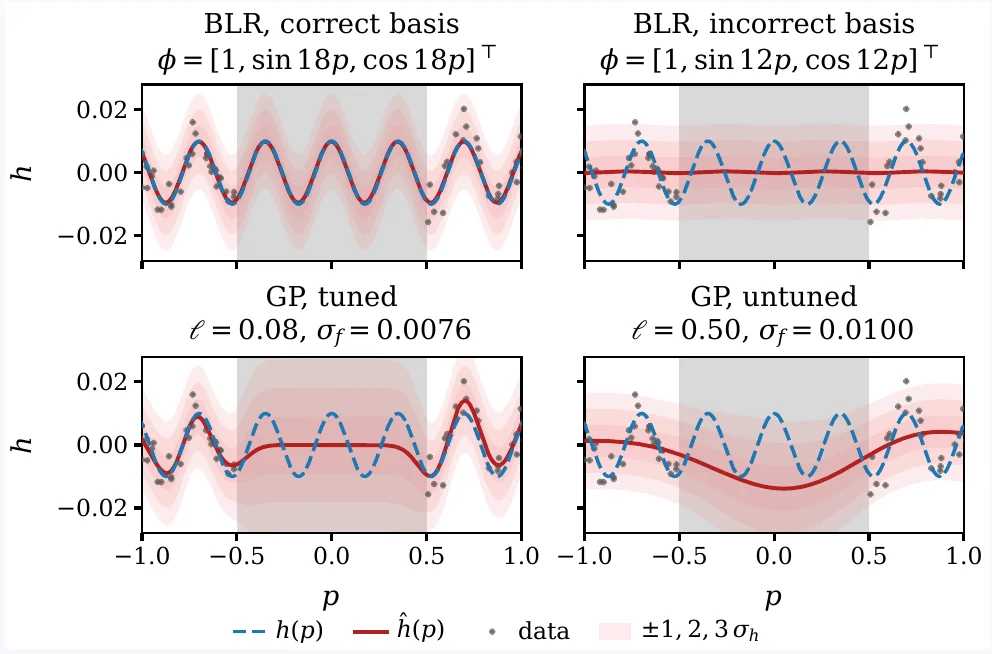
- BLR, correct basis (Bayesian linear regression on 1, sin 18p, cos 18p): right even across the gap, because the basis matches the terrain.
- BLR, wrong basis (sin 12p, cos 12p): wrong, and its narrow band says it is sure.
- GP, tuned (Gaussian process, length scale 0.08): needs no basis. It fits the data and widens its band in the gap.
- GP, untuned (length scale 0.50): too smooth, so it misses the bumps.
Driving with an Uncertain Model: GP-MPC
Same car, now controlled. It must reach a target while keeping speed |v| ≤ 0.6. The MPC uses the GP terrain model and shrinks the speed limit by β times the predicted standard deviation: |v| + βσ ≤ vmax.
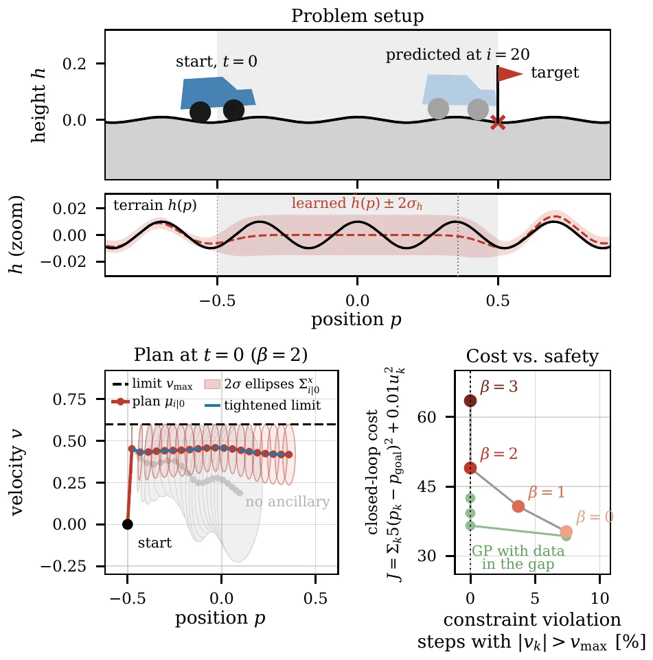
- β = 0 (no margin): lowest cost, but the car breaks the speed limit.
- Larger β: fewer violations, higher cost. That is the trade-off.
- Grey ellipses: without the extra feedback controller the uncertainty grows faster, which would force an even tighter limit.
- Green points: with data added inside the gap, the β = 2 controller gets a lower cost and still no violations.
Fig. 8 & Fig. 9: Data-Enabled Predictive Control (DeePC) — Flat vs. Bumpy Terrain
Position-only output feedback (y = p) with stage cost ℓ(u,y) = (y − p_s)² + 0.02u², horizon L = 20, T_ini = 4
Enough Data, and DeePC Equals MPC
DeePC predicts the future directly from one recorded input/output run of length N, with no model in between. On flat terrain the car is a linear system, so the theory holds exactly.
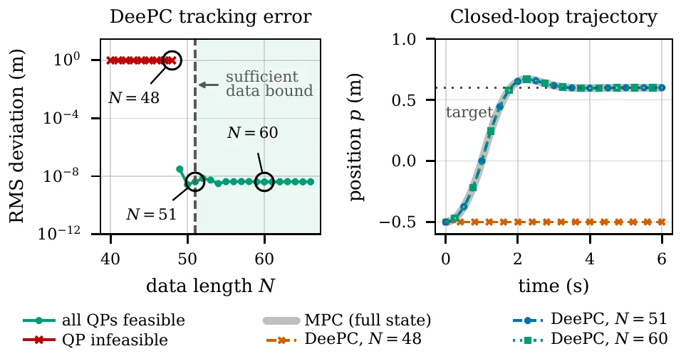
- N < 51: the data is not rich enough and the optimisation has no solution (red).
- N ≥ 51: DeePC matches MPC with the exact model (error near 10−8).
- More data beyond that bound does not help.
Off the Ideal Case: More Data and Regularisation
On bumpy terrain the car is no longer linear, and the measurements are noisy. The method still works, but it needs help.
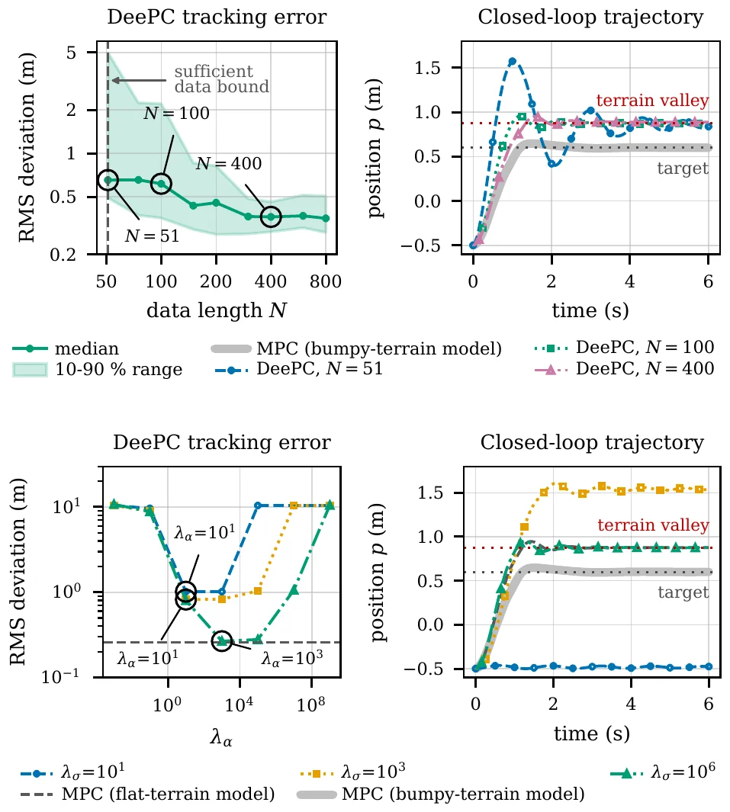
- Top: error drops slowly with more data and never reaches zero. With N = 51 the car overshoots into the valley.
- Bottom: too little or too much regularisation both give a large error. A good middle setting gets close to MPC that knows the bumpy terrain.
Figs. 10–11 (Safe RL on Cart-Pole) & Fig. 12 (Controller Tuning with BO)
Combining model-free exploration with safety filtering (Example 5) and sample-efficient closed-loop tuning (Example 6)
Cart-Pole Swing-Up: Plain DQN vs. DQN with a Safety Filter
DQN is a model-free RL method: it learns by trying actions and scoring them. Left plots show the path of the pole tip, right plots show the score (return) during training.
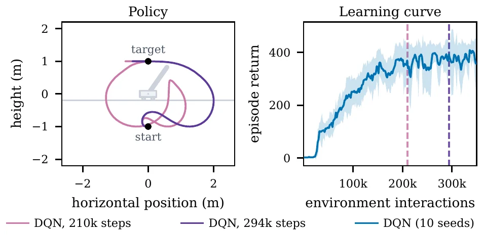
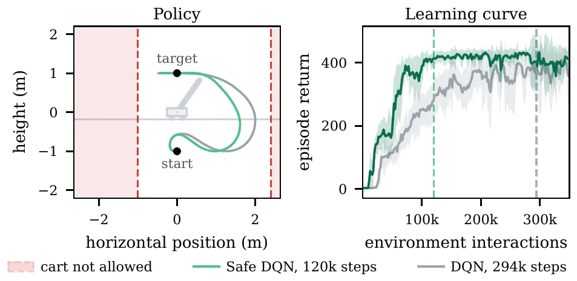
Controller Tuning with Bayesian Optimization (BO)
One gain θ of a pole-balancing feedback controller is tuned. Each trial runs the real loop for 30 s and returns a cost J(θ). BO fits a GP to the trials and picks the next θ where the expected improvement is highest. In the paper it gets close to the best gain after five trials.
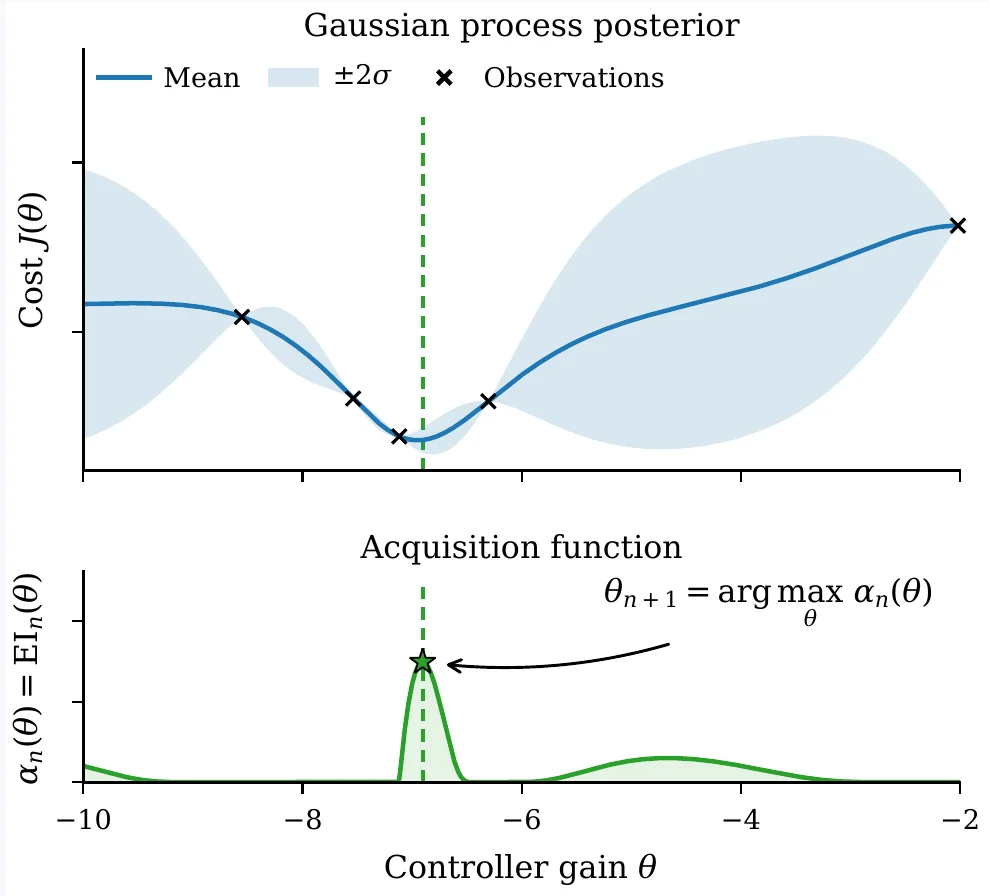
Sketch, not from the paper: a toy cost curve and a simplified surrogate, to show the try-fit-pick loop.
TABLE I: Overview of Learning-Based Control Method Families
The paper's ten method families, with each cell shortened into plain words. The paper notes the listed controllers and guarantees are examples, not a full list.
| Method Family | What is Learned? | Prior Knowledge Required | Learning from Data | Estimation Errors | Compatible Controller Synthesis | Resulting Closed-Loop Guarantees |
|---|